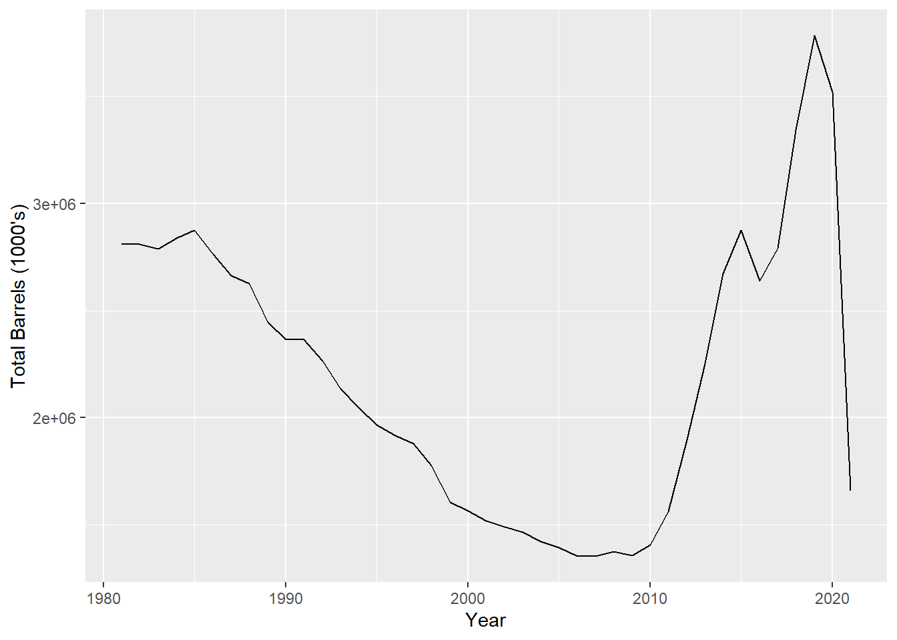
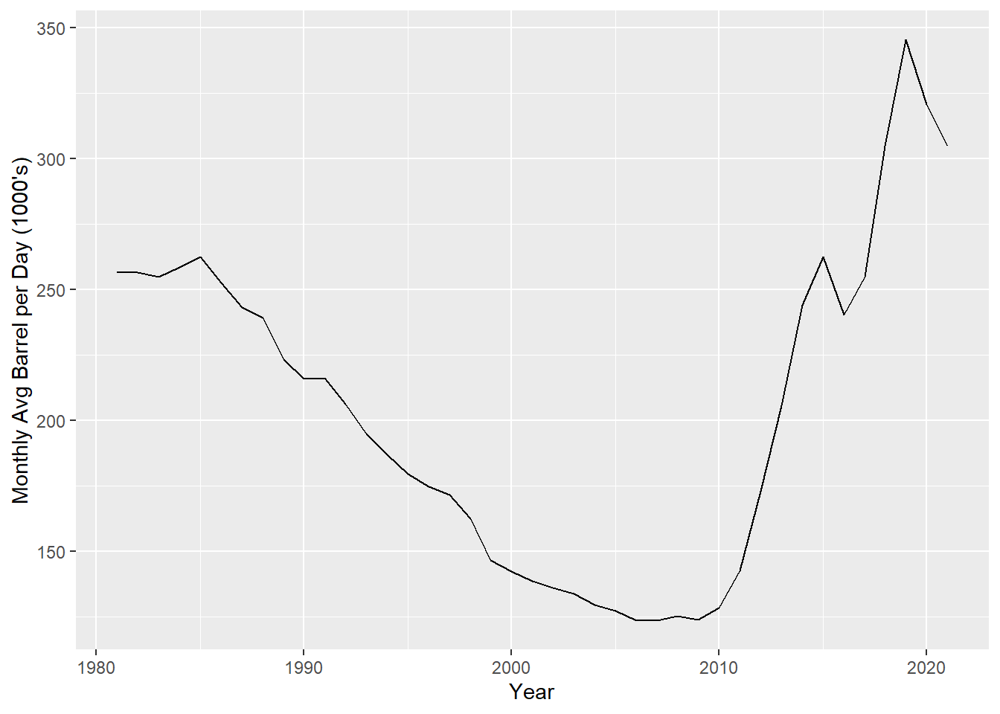

Wrangling Oil Production Data with R and RESTful API’s
Andrew Leonard
2021-09-24
Overview
This R Markdown document is part of a series of examples similar to this one. The purpose of the examples is to demonstrate how to solve problems in data science and analytics engineering with various tools, strategies, and techniques.
If you want to learn more about these examples, please checkout the home page.
Purpose of This Document
The purpose of this R Markdown document is to demonstrate how R can be used to solve problems in data science and analytics engineering.
In this example, R is used to:
- Securely extract data from an API
- Wrangle data and convert data types
- Identify and fix “weird” values in data
Syntax Commonly Used
If a variable name begins with a . this is simply to avoid conflicting names with R keywords or other variables in the namespace.
Scenario
In both data science and analytics engineering, you will inevitably encounter Application Programming Interfaces (APIs). If you‚Äôre not familiar with APIs but would like to learn more about them, your journey down that rabbit hole can begin with this post on Redhat‚Äôs website üòÑ.
Outline
For this example, I want to use R to download oil production data from the U.S. Energy Information Administration to my local machine via their RESTful API.
When it comes to data wrangling and Extract, Transform, Load (ETL), I find it easiest to start by drawing it out.
Driagram

Drawn with https://app.diagrams.net/
Setup
Let’s start off by loading the necessary packages.
Required R Packages
library("glue")
library("httr")
library("jsonlite")
library("data.table")
library("anytime")
library("ggplot2")
suppressMessages(library("here"))Execute
1 - Setup function to send GET request to EIA API

Drawn with https://app.diagrams.net/
Setup a function in order to read the contents of the text file containing your API key into R without sharing it with everyone on GitHub:
get_file_txt <- function(path_to_txt) {
file_size <- file.info(path_to_txt)$size
file_txt <- readChar(path_to_txt, file_size)
return(file_txt)
}
get_api_key <- function() {
user_profile <- Sys.getenv("USERPROFILE")
path_to_key <- file.path(user_profile, "Documents", "Creds", "eia_api_key.txt")
api_key <- get_file_txt(path_to_key)
return(api_key)
}
api_key <- get_api_key()Create a variable for the URL with the parameters {api_key} and {state_abb}. Then create a function to edit those parameters using the glue package.
api_url <- "http://api.eia.gov/series/?api_key={api_key}&series_id=PET.MCRFP{state_abb}1.M"
format_eia_url <- function(state_abb) {
glue(api_url, api_key = api_key, state_abb = state_abb)
}2 - Setup functions to handle the API’s response

Drawn with https://app.diagrams.net/
Now let’s create functions to handle the requests.
get_eia_response <- function(state_abb) {
url <- format_eia_url(state_abb)
res <- GET(url)
return(res)
}
response_to_json <- function(res) {
.content <- rawToChar(res$content)
json <- fromJSON(.content)
return(json)
}
json_to_data <- function(json) {
.data <- json$series$data
return(.data)
}Some of the state abbreviations will return NULL results. We need to format these results a bit differently than the others. We’ll filter for NA values later in order to exclude these.
rename_columns <- function(DT) {
old_names <- names(DT)
new_names <- c("date", "barrel")
setnames(DT, old_names, new_names)
}
all_cols_to_char <- function(DT) {
# Allows all results to be combined with rbindlist
for (j in names(DT))
set(DT, j = j, value = as.character(DT[[j]]))
}
# directs flow
format_data <- function(.data) {
DT <- as.data.table(.data)
rename_columns(DT)
all_cols_to_char(DT)
return(DT)
}For example, CT returns an empty data set.
state_abb <- "CT"
res <- get_eia_response(state_abb)
json <- response_to_json(res)
print(json)## $request
## $request$command
## [1] "series"
##
## $request$series_id
## [1] "pet.mcrfpct1.m"
##
##
## $data
## $data$error
## [1] "invalid series_id. For key registration, documentation, and examples see https://www.eia.gov/developer/"#clean up
rm(state_abb, res, json)3 - Create function to run it
Create a function to bring bring it all together.
run <- function(state_abb) {
res <- get_eia_response(state_abb)
json <- response_to_json(res)
.data <- json_to_data(json)
if (is.null(.data))
return(data.table("date" = NA_character_, "barrel" = NA_character_))
format_data(.data)
}Run it for each state abbreviation one at a time. Check the length of the list at the end - it should have 50 elements (one for each state).
results <- sapply(state.abb, run, USE.NAMES = TRUE, simplify = F)
print(length(results))## [1] 50Looks like we have all 50 responses. Now let’s combine them into one single table.
DT <- rbindlist(results, use.names = TRUE, idcol = "state_abb")4 - Clean the data
Check the data type of each column in the result set.
str(DT)## Classes 'data.table' and 'data.frame': 14600 obs. of 3 variables:
## $ state_abb: chr "AL" "AL" "AL" "AL" ...
## $ date : chr "202106" "202105" "202104" "202103" ...
## $ barrel : chr "345" "335" "331" "379" ...
## - attr(*, ".internal.selfref")=<externalptr>Now let’s find any NA values in the date column and filter them out - these are from the states without data.
print(any(is.na(DT$date)))## [1] TRUEDT <- DT[!is.na(date)]Let’s create a column with the full state name. To do this, create a function to map the state abbreviation to the state name then apply the function to the state_abb column in DT.
state_abb_to_name <- function(state_abb) {
state_name <- toupper(state.name[which(state.abb == state_abb)])
return(state_name)
}
DT[, state := state_abb_to_name(state_abb), by = .(state_abb)]Convert barrel column from character to numeric and the date column to date and create a year column using the date column.
DT[, `:=` (barrel = as.numeric(barrel),
date = paste0(date, "01"))]
DT[, date := as.Date(date, "%Y%m%d")]
DT[, year := year(date)]Check the data types once again to make sure everything is squared away.
str(DT)## Classes 'data.table' and 'data.frame': 14580 obs. of 5 variables:
## $ state_abb: chr "AL" "AL" "AL" "AL" ...
## $ date : Date, format: "2021-06-01" "2021-05-01" ...
## $ barrel : num 345 335 331 379 339 383 380 355 378 333 ...
## $ state : chr "ALABAMA" "ALABAMA" "ALABAMA" "ALABAMA" ...
## $ year : int 2021 2021 2021 2021 2021 2021 2020 2020 2020 2020 ...
## - attr(*, ".internal.selfref")=<externalptr>Reorder the columns in the table and set keys for the data.
setcolorder(DT, c('state_abb', 'state', 'year', 'date', 'barrel'))
setkey(DT, state_abb, date)View the top 6 rows of the data.
head(DT)## state_abb state year date barrel
## 1: AK ALASKA 1981 1981-01-01 49789
## 2: AK ALASKA 1981 1981-02-01 45346
## 3: AK ALASKA 1981 1981-03-01 50150
## 4: AK ALASKA 1981 1981-04-01 48235
## 5: AK ALASKA 1981 1981-05-01 48977
## 6: AK ALASKA 1981 1981-06-01 48967View the bottom 6 rows of the data.
tail(DT)## state_abb state year date barrel
## 1: WY WYOMING 2021 2021-01-01 7310
## 2: WY WYOMING 2021 2021-02-01 6147
## 3: WY WYOMING 2021 2021-03-01 6959
## 4: WY WYOMING 2021 2021-04-01 6978
## 5: WY WYOMING 2021 2021-05-01 7078
## 6: WY WYOMING 2021 2021-06-01 6841View a summary of the statistics of the entire data set.
summary(DT)## state_abb state year date
## Length:14580 Length:14580 Min. :1981 Min. :1981-01-01
## Class :character Class :character 1st Qu.:1991 1st Qu.:1991-02-01
## Mode :character Mode :character Median :2001 Median :2001-03-16
## Mean :2001 Mean :2001-03-17
## 3rd Qu.:2011 3rd Qu.:2011-05-01
## Max. :2021 Max. :2021-06-01
## barrel
## Min. : 0
## 1st Qu.: 146
## Median : 864
## Mean : 6148
## 3rd Qu.: 4524
## Max. :168487Note that the Min. date is 1981-01-01 and the Max. date is 2021-04-01. This means if we ever want to look at annual production, the 2021 numbers will be much lower than all other years. For example.
dt <- DT[, .(total_barrels = sum(barrel)), by = .(year)]
ggplot(dt, aes(x = year, y = total_barrels)) +
geom_line() +
labs(y = "Total Barrels (1000's)", x = "Year")
So if we want to look at annual data, it may be more useful to look at average barrels per day instead of the total production.
First calculate the number of total days in each month.
calc_eomonth_day <- function(date) {
first_of_next_month <- lubridate::ceiling_date(date, unit = "month")
lubridate::day(first_of_next_month - 1)
}
DT[, num_days_in_month := calc_eomonth_day(date)]
head(DT)## state_abb state year date barrel num_days_in_month
## 1: AK ALASKA 1981 1981-01-01 49789 31
## 2: AK ALASKA 1981 1981-02-01 45346 28
## 3: AK ALASKA 1981 1981-03-01 50150 31
## 4: AK ALASKA 1981 1981-04-01 48235 30
## 5: AK ALASKA 1981 1981-05-01 48977 31
## 6: AK ALASKA 1981 1981-06-01 48967 30Then divide the barrel production by the total number of days in each month.
DT[, barrels_per_day := barrel / num_days_in_month]
# drop the num_days_in_month columns
DT[, num_days_in_month := NULL]Take the average in order to get an estimate for the average barrel per day for each month.
dt <- DT[, .(avg_barrel_per_day = mean(barrels_per_day)), by = .(year)]
ggplot(dt, aes(x = year, y = avg_barrel_per_day)) + geom_line() + labs(y = "Monthly Avg Barrel per Day (1000's)", x = "Year")
4 - Save the results

Drawn with https://app.diagrams.net/
csv_fname <- here("Data", "eia_oil_production.csv")
fwrite(DT, csv_fname)And that’s it! I hope this was helpful. Please feel free to contact me with any questions or concerns.